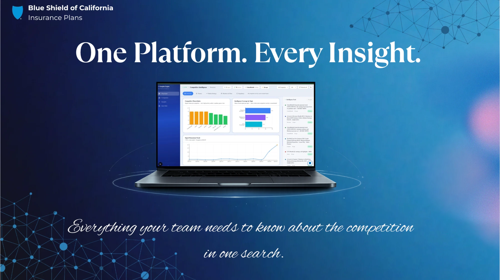
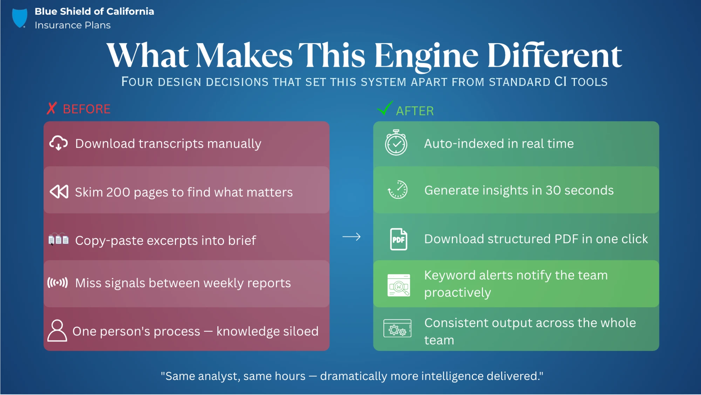
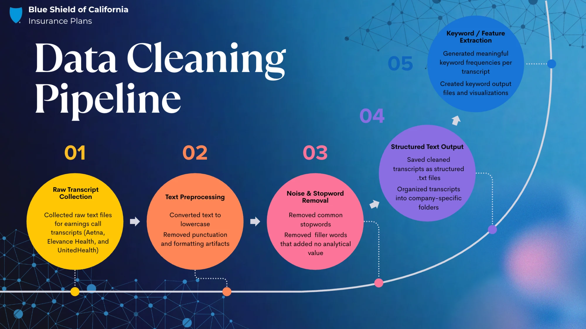
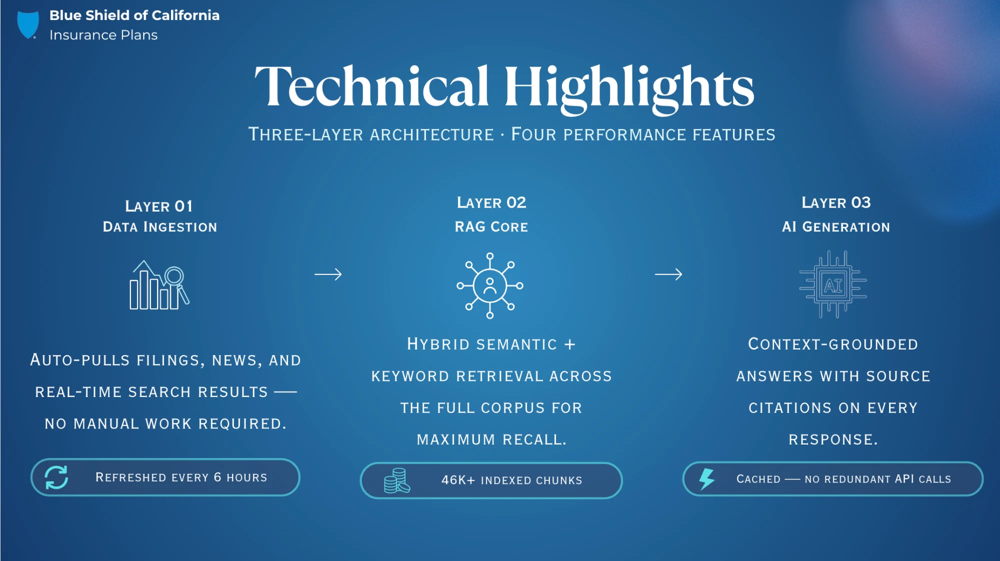

Blue Shield of California
Competitive Intelligence Insights Engine · UC Irvine MSBA Capstone 2026
Disclaimer: Some information including presentations, GitHub repositories, and other sensitive details have been intentionally excluded from this page to comply with an NDA that has been signed to protect the privacy of the client.

Overview
Blue Shield of California's Competitive Intelligence team processes large volumes of unstructured text from public sources each week to produce actionable insights for leadership. The manual effort required to synthesize this information left little time for strategic interpretation.
We built a RAG (Retrieval-Augmented Generation) system so an analyst can run a single query and spend their time interpreting findings instead of hunting through documents.
The Challenge
Blue Shield's CI team spent every week manually reading through large volumes of publicly available documents to produce a competitive newsletter. Thousands of pages of financial and regulatory language had to become a concise brief a senior stakeholder could act on.
Getting executives to trust AI-generated analysis from documents they never read was the central design challenge.

The Users
Primary: The CI team. They knew the source material well but spent too much time locating and synthesizing it.
Secondary: Blue Shield leadership. They consumed the output without touching the underlying data.
The tool had to work at two levels: granular enough for an analyst to verify a specific claim, clean enough for an executive to act on the summary.
Exploratory Data Analysis
We started by running EDA on a large corpus of publicly available documents, cleaning and preprocessing the data to surface trends, patterns, and competitive positioning signals. Those findings shaped what we indexed and how we structured retrieval.

What We Built
The system runs across three layers:
- Data ingestion: Public source documents are automatically ingested and kept current on a regular refresh cycle.
- RAG core: Hybrid semantic and keyword retrieval searches a large indexed corpus. Analysts get relevant results whether they phrase a question precisely or loosely.
- AI generation: Claude Haiku and Sonnet return structured, source-cited answers grounded in the retrieved corpus. Response caching cuts redundant API calls.

UX Case Study
I designed four distinct surfaces, each built around a specific job the user needed to do.
1. Signal Dashboard (Monitor)
The overview shows a Competitive Threat Index ranking competitors by signal volume, a topic-level coverage breakdown, and a Signal Momentum Trend line. An analyst checking in each morning can see in seconds whether activity is spiking and where to focus. This screen shows structured signal data with no AI output, because I wanted the team opening it every morning whether or not anyone was writing a brief that week.
2. Competitor Profiles (Explore)
Each competitor gets a profile card showing revenue, member count, and MLR. Clicking through opens a detail view with a one-paragraph positioning summary, a high/low-priority Threats to Blue Shield section, and a Strengths / Weaknesses / Recent Strategic Moves breakdown. Financials sit at the card level because that's the first thing the CI team reaches for when sizing up a competitor. Strategic interpretation goes one level deeper, in the detail view where readers are already engaged.
3. Ask AI Chat (Query)
The chat interface takes free-form questions and returns sourced answers. The key call was inline citation chips: each [Source 4] tag sits at the specific claim it supports instead of being appended at the bottom. When citations sit at the end, analysts skip them and take the answer at face value; inline, checking a source becomes part of reading. The output fed real executive decisions, so it needed to hold up to scrutiny.
4. Brief Generator (Synthesize)
I designed the brief generator around the CI team's actual workflow. Every week they built the competitive newsletter from memory and scattered notes. This screen lets an analyst select sources, choose focus areas, set a date window, and generate a structured brief. The output appears next to the configuration panel for review without losing the selections. The controls stay explicit: the analyst chooses what goes into the brief, and the model only writes it up.
Key Design Decisions
Four distinct surfaces instead of one chat box. The early spec was a single chat interface. I split monitoring, exploration, querying, and synthesis into separate screens because an analyst checking morning signals is doing a different job than one writing a brief, and forcing both through a query box serves neither.
Revenue and member count at the card level. Watching the CI team evaluate competitors, I saw them reach for financials first as a credibility baseline. Surfacing those metrics at the card level freed the detail view to carry deeper interpretive content without losing the reader's attention.
What I'd Change
I'd make the citation chips interactive. Right now they're static labels. Given more time, I'd make each chip clickable, expanding to show the relevant source excerpt in the chat pane without opening a separate view. That's the moment an analyst decides whether to trust the answer, and the current design leaves it unresolved.
My Role
For the final presentation, I framed the problem narrative, structured the opening and the competitive parallel, and walked through the technical architecture across all three layers. I also worked on pipeline design and ran the demo sequence.
Stack & Team
Stack: Python · Claude API (Haiku + Sonnet) · Retrieval-Augmented Generation · Hybrid semantic/keyword search · SEC EDGAR · Real-time news ingestion
Team: Cameron Wong · Orr Tahar · Shweta SC · Ying Chih (Inez) Chang · Anwen (Ann) Chen
Industry Partner: Blue Shield of California